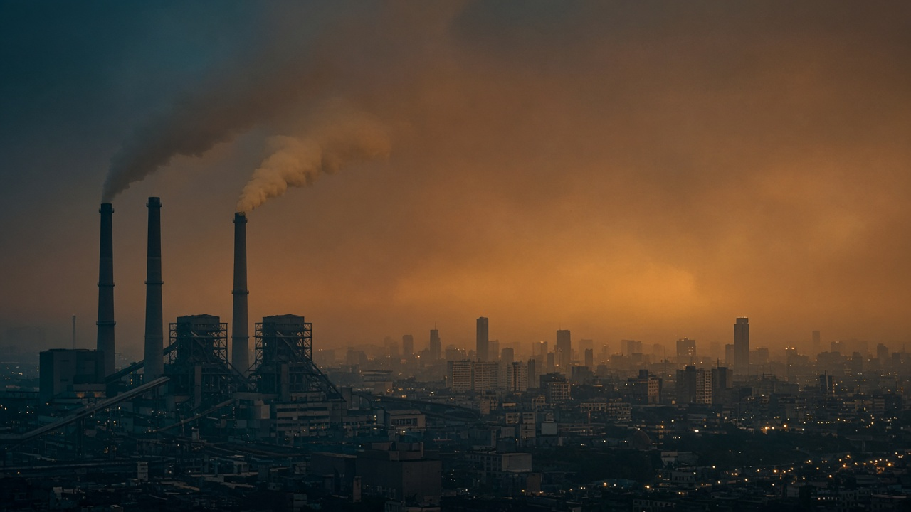
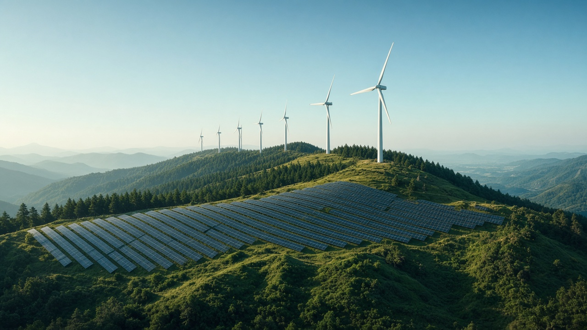
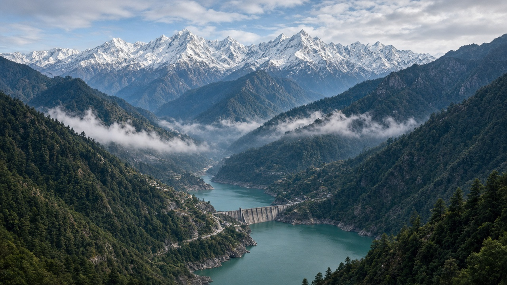

Fossil Fuels & the Energy Transition
Published on July 9, 2026

Fossil fuels—coal, oil, and natural gas—supply the majority of global primary energy and are the largest source of anthropogenic carbon dioxide emissions. Formed over millions of years from ancient organic matter, these resources powered industrialization, modern transport, and economic growth across the world. However, their combustion releases carbon stored underground into the atmosphere, driving climate change, air pollution, and health impacts in cities from Kathmandu to Beijing. Phasing down unabated fossil fuel use while ensuring reliable energy access is the defining challenge of the twenty-first century energy transition.
The energy transition involves shifting to renewable electricity from solar, wind, and hydropower; electrifying transport and heating where feasible; improving efficiency across buildings and industry; and developing low-carbon fuels for hard-to-abate sectors such as steel, cement, and long-haul aviation. Many countries are retiring coal plants, tightening vehicle emissions standards, and investing in grid modernization to accommodate variable renewables. For fossil-dependent economies and workers in mining and extraction industries, just transition policies provide retraining, social protection, and regional development to avoid leaving communities behind as energy systems evolve.
Geopolitical dimensions complicate the transition, as fossil fuel markets influence trade balances, energy security, and international relations. Yet the economics of renewables have improved dramatically, with solar and wind often the cheapest new generation in many regions. Nations rich in hydropower, such as Nepal, can leverage clean electricity for domestic use and export while minimizing new fossil dependence. Ultimately, limiting global warming requires not only adding clean energy but also explicitly reducing fossil fuel production and consumption in line with science-based timelines, supported by finance, technology transfer, and governance reforms that align energy policy with climate goals.

जीवाश्म इन्धन—कोइला, तेल र प्राकृतिक ग्यास—विश्वको प्राथमिक ऊर्जाको बहुमत आपूर्ति गर्छ र मानव–उत्पादित कार्बन डाइअक्साइड उत्सर्जनको सबैभन्दा ठूलो स्रोत हो। लाखौं वर्षमा प्राचीन जैविक पदार्थबाट बनेका यी स्रोतहरूले विश्वभर औद्योगिकीकरण, आधुनिक यातायात र आर्थिक वृद्धि चलाए। तर तिनीहरूको दहनले भू–गर्भमा भण्डारण कार्बन वायुमण्डलमा छोड्छ, जसले जलवायु परिवर्तन, वायु प्रदूषण र काठमाडौंदेखि बेइजिंगसम्मका सहरहरूमा स्वास्थ्य प्रभाव ल्याउँछ। विश्वसनीय ऊर्जा पहुँच सुनिश्चित गर्दै नियन्त्रणविहीन जीवाश्म इन्धन प्रयोग घटाउनु एक–इस–शताब्दीको ऊर्जा संक्रमणको मुख्य चुनौती हो।
ऊर्जा संक्रमणमा सौर्य, पवन र जलविद्युतबाट नवीकरणीय बिजुलीतर्फ सर्ने, सम्भव भए यातायात र तताउने प्रणाली विद्युतीकरण गर्ने, भवन र उद्योगमा दक्षता बढाउने, र इस्पात, सिमेन्ट र लामो दूरीको उडान जस्ता कठिन क्षेत्रका लागि कम–कार्बन इन्धन विकास गर्ने समावेश छ। धेरै देशहरूले कोइला संयन्त्र बन्द गर्दै, सवारी उत्सर्जन मापदण्ड कडा बनाउँदै र परिवर्तनशील नवीकरणीय ऊर्जा समायोजन गर्न ग्रिड आधुनिकीकरणमा लगानी गरिरहेका छन्। जीवाश्म–निर्भर अर्थतन्त्र र खनन उद्योगका श्रमिकहरूका लागि न्यायपूर्ण संक्रमण नीतिले पुनः तालिम, सामाजिक सुरक्षा र क्षेत्रीय विकास प्रदान गर्छ, जसले ऊर्जा प्रणाली विकसित हुँदा समुदाय पछि नपर्न मद्दत गर्छ।
भू–राजनीतिक आयामले संक्रमण जटिल बनाउँछ, किनभने जीवाश्म इन्धन बजारले व्यापार सन्तुलन, ऊर्जा सुरक्षा र अन्तर्राष्ट्रिय सम्बन्धलाई प्रभाव पार्छ। तर नवीकरणीय ऊर्जाको अर्थशास्त्र नाटकीय रूपमा सुधार भएको छ, धेरै क्षेत्रमा सौर्य र पवन प्रायः सबैभन्दा सस्तो नयाँ उत्पादन हुन्छ। नेपाल जस्ता जलविद्युत–समृद्ध राष्ट्रहरूले नयाँ जीवाश्म निर्भरता कम गर्दै स्वच्छ बिजुली घरेलु प्रयोग र निर्यातका लागि उपयोग गर्न सक्छन्। अन्ततः, विश्वव्यापी तापक्रम वृद्धि सीमित गर्न स्वच्छ ऊर्जा थप्नु मात्र होइन, विज्ञान–आधारित समयसीमा अनुसार जीवाश्म इन्धन उत्पादन र उपभोग स्पष्ट रूपमा घटाउनु पनि आवश्यक छ, जुन वित्त, प्रविधि हस्तान्तरण र ऊर्जा नीतिलाई जलवायु लक्ष्यसँग मेल खाने शासन सुधारले समर्थन गर्नुपर्छ।

जीवाश्म ईंधन—कोयला, तेल और प्राकृतिक गैस—वैश्विक प्राथमिक ऊर्जा का अधिकांश हिस्सा पूरा करते हैं और मानव–उत्पादित कार्बन डाइऑक्साइड उत्सर्जन का सबसे बड़ा स्रोत हैं। लाखों वर्षों में प्राचीन जैविक पदार्थ से बने, इन संसाधनों ने दुनिया भर में औद्योगीकरण, आधुनिक परिवहन और आर्थिक वृद्धि को शक्ति दी। हालांकि, इनके दहन से भू–गर्भ में संग्रहीत कार्बन वायुमंडल में छोड़ा जाता है, जिससे जलवायु परिवर्तन, वायु प्रदूषण और काठमांडू से बीजिंग तक के शहरों में स्वास्थ्य प्रभाव होते हैं। विश्वसनीय ऊर्जा पहुँच सुनिश्चित करते हुए नियंत्रण–रहित जीवाश्म ईंधन उपयोग को कम करना इक्कीसवीं सदी के ऊर्जा संक्रमण की मुख्य चुनौती है।
ऊर्जा संक्रमण में सौर, पवन और जलविद्युत से नवीकरणीय बिजली की ओर बढ़ना, जहाँ संभव हो परिवहन और तापन का विद्युतीकरण, भवनों और उद्योग में दक्षता सुधार, तथा इस्पात, सीमेंट और लंबी दूरी की उड़ान जैसे कठिन क्षेत्रों के लिए कम–कार्बन ईंधन विकसित करना शामिल है। कई देश कोयला संयंत्र बंद कर रहे हैं, वाहन उत्सर्जन मानकों को कड़ा कर रहे हैं, और परिवर्तनशील नवीकरणीय ऊर्जा को समायोजित करने के लिए ग्रिड आधुनिकीकरण में निवेश कर रहे हैं। जीवाश्म–निर्भर अर्थव्यवस्थाओं और खनन उद्योगों के श्रमिकों के लिए न्यायपूर्ण संक्रमण नीतियां पुनः प्रशिक्षण, सामाजिक सुरक्षा और क्षेत्रीय विकास प्रदान करती हैं, ताकि ऊर्जा प्रणालियों के विकसित होने पर समुदाय पीछे न रह जाएं।
भू–राजनीतिक आयाम संक्रमण को जटिल बनाते हैं, क्योंकि जीवाश्म ईंधन बाजार व्यापार संतुलन, ऊर्जा सुरक्षा और अंतरराष्ट्रीय संबंधों को प्रभावित करते हैं। फिर भी, नवीकरणीय ऊर्जा की अर्थशास्त्र में नाटकीय सुधार हुआ है, कई क्षेत्रों में सौर और पवन अक्सर सबसे सस्ती नई उत्पादन होती है। नेपाल जैसे जलविद्युत–समृद्ध देश स्वच्छ बिजली का घरेलू उपयोग और निर्यात कर सकते हैं, साथ ही नई जीवाश्म निर्भरता कम कर सकते हैं। अंततः, वैश्विक गर्मी को सीमित करने के लिए केवल स्वच्छ ऊर्जा जोड़ना ही काफी नहीं, बल्कि विज्ञान–आधारित समयसीमा के अनुसार जीवाश्म ईंधन उत्पादन और उपभोग को स्पष्ट रूप से कम करना भी आवश्यक है, जिसे वित्त, प्रौद्योगिकी हस्तांतरण और ऊर्जा नीति को जलवायु लक्ष्यों के साथ मेल खाने वाले शासन सुधारों से समर्थन मिलना चाहिए।